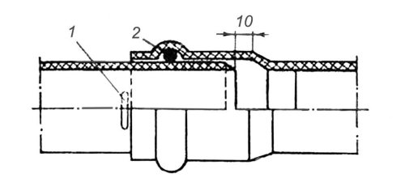
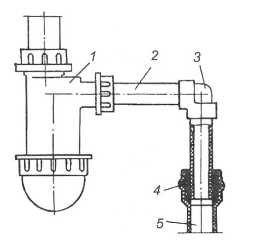
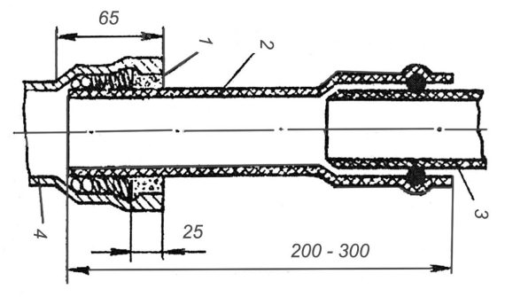

Соединение неметаллических труб.


Общие сведения о пластмассовых трубах. В системах внутренней канализации и водостоков различного назначения применяют трубы и фасонные части, изготовленные из полиэтилена плотности ПЕЛ и низкой плотности (ПИП), полипропилена (ПП) и непластифицировааного поливинилхлорида (ПВХ).
Пластмассовые трубы и фасонные части имеют высокую коррозионную стойкость и низкую теплопроводность, что значительно снижает образование конденсата на поверхности труб. Внутренняя поверхность у них гладкая, благодаря чему пропускная способность пластмассовых труб больше, чем у чугунных труб таких же диаметров. Они являются хорошими диэлектриками, что исключает появление блуждающих токов в системах из таких труб.
Пластмассовые трубы хорошо поддаются механической обработке (резанию, сверлению, формовке), легко соединяются в раструб с резиновым уплотнительным кольцом, а также хорошо свариваются.
Наряду с перечисленными преимуществами пластмассовые трубы обладают следующими недостатками: большой чувствительностью к механическим повреждениям; значительным тепловым удлинением – например, коэффициент линейного расширения твердого ПВХ в семь, а полиэтилена в 10–15 раз больше, чем у стали; хрупкостью при низких температурах (трубы из ПВХ), поэтому монтаж систем из этих труб следует производить при температуре наружного воздуха не ниже -15 °C.
Канализационные пластмассовые трубы и фасонные части к ним выпускают с условными проходами 40, 50, 85 и 100 мм и длиной 3, 6, 8,10 и 12 м. Поверхность труб и фасонных частей должна быть ровной и гладкой, не допускаются трещины, пузыри, раковины, вздутия и посторонние включения, видимые без применения увеличительных приборов. Высота выступов после удаления литников равна не более 1 мм. Концы труб должны быть обрезаны перпендикулярно оси труб и очищены от заусенцев.
При монтаже пластмассовых труб используют раструбные, сварные и клеевые соединения. Чтобы раструбные соединения были герметичными, применяют резиновые уплотнительные кольца, поверхность которых должна быть ровной, гладкой, без раковин и заусенцев.
Соединение пластмассовых труб. Основной способ соединения пластмассовых труб и фасонных частей для систем внутренней канализации – раструбное соединение с резиновым уплотнительным кольцом. Герметичность раструба достигается за счет сжатия резинового кольца между стенками раструба и гладким концом трубы.
Раструбное соединение пластмассовых труб с резиновым уплотнительным кольцом собирают в такой последовательности. Очищают от грязи наружную поверхность трубы, внутреннюю поверхность раструба и желобок, а также резиновое кольцо. Затем вкладывают резиновое кольцо в желобок раструба, после чего гладкий конец трубы с фаской смазывают глицерином или мыльным раствором и легким вращением вводят его в раструб до метки. Когда раструбное соединение будет закончено, проверяют наличие кольца в желобке, поворачивая одну из соединяемых деталей вокруг другой. Если кольцо находится в желобке, то деталь легко поворачивается.
Присоединение выпуска керамического унитаза к канализационному трубопроводу из полиэтиленовых труб показано на рис. 22. В этом случае герметичность стыка достигается уплотнением резиновыми кольцами с последующей заделкой цементным раствором на глубину 1/3 раструба.

Рис. 22. Раструбное соединение с резиновым кольцом: 1 – метка; 2 – резиновое кольцо
Пластмассовые сифоны присоединяют к системе канализации с помощью резиновой переходной детали, вставляемой в раструб трубы из ПВХ (рис. 23).
Канализационные стояки из пластмассовых труб 3 соединяют с чугунными трубами с помощью полиэтиленового переходного патрубка, на конце которого имеется раструб с желобком, обеспечивающий плотное соединение с пластмассовой трубой (рис. 24).
Соединение на клею. Для склеивания поливинилхлоридных труб применяют раструбное соединение. Процесс склеивания состоит из подготовки концов труб, приготовления клея и склеивания.
При подготовке концов труб склеиваемым поверхностям придают шероховатость, для чего наружный конец трубы и внутреннюю поверхность раструба обрабатывают шлифовальной шкуркой.

Рис. 23. Присоединение полиэтиленового бутылочного сифона к канализационному водопроводу:
1 – полиэтиленовый бутылочный сифон;
2 – канализационный водопровод; 3 – угольник;
4 – резиновая переходная деталь;
5 – отводная труба
Обработанные концы тщательно обезжиривают метиленхлоридом.
Для склеивания труб из ПВХ рекомендуются два состава клея. Первый состав содержит перхлорвиниловую смолу 14–16 ч. и метиленхлорид 86–84 вес. ч. Второй состав содержит перхлорвиниловую смолу 14–16 ч., метиленхлорид 76–72 ч., циклогексанон 10–12 ч. Второй состав клея используют при склеивании труб диаметром более 100 мм и температуре наружного воздуха более 20 °C. Для склеивания одного соединения труб диаметром 50 или 100 мм требуется соответственно 12 и 50 г клея. Из-за летучести растворителей консистенция клея постепенно изменяется, поэтому в открытом сосуде клей можно хранить не более 4 ч.

Рис. 24. Присоединение труб из ПВХ к чугунным канализационным трубам:
1 – просмоленная прядь и расширяющийся цемент;
2 – полиэтиленовый переходный патрубок;
3 – труба из ПВХ; 4 – чугунная труба
После подготовки концов труб клей наносят на 1/3 глубины раструба и на всю длину калиброванного конца трубы. Клей наносят быстро, равномерным тонким слоем с помощью мягких кистей шириной 30–40 мм. Затем калиброванный конец вводят в раструб до упора. Склеенные стыки в течение
5 минут не должны подвергаться механическим воздействиям, а склеенные узлы следует выдерживать перед монтажом не менее 2 ч.
Сварка пластмассовых труб. Стыковые соединения на трубах из ПЕЛ, ЛИП и 1111 выполняют контактной сваркой. Перед сваркой свариваемые поверхности торцов труб очищают от грязи и окисной пленки.
Для соединения полиэтиленовых труб диаметром 100–250 мм на сварке применяют универсальную установку. При сварке стыкового соединения торцы труб оплавляют электронагревательным диском, после чего диск убирают, а оплавленные поверхности труб под небольшим давлением соединяют. Промежуток времени между окончанием нагревания и соединением оплавленных торцов труб должен быть в пределах 2–3 с.
Сварку выполняют в такой последовательности. На конце свариваемой трубы снимают наружную фаску под углом 30–45 ° на длине, равной толщине стенки трубы. Затем устанавливают раструб фасонной части в цилиндре до упора и трубу в кольцо до упора в диск. После оплавления одновременно снимают детали с рабочих элементов, после чего плотно соединяют и выдерживают в течение 10–30 с.
Пластмассовые трубы перерезают на станках с дисковыми пилами толщиной 1,5–2 мм, с шагом зубьев 3–4 мм и разводкой зубьев 0,5–0,6 мм на сторону. В домашних условиях отрезать трубы нужной длины можно ножовкой.
Фаски на трубах снимают механизированными и ручными приспособлениями, в которых режущим инструментом служат специальные фрезы, резцовые головки с несколькими ножами или резцами.
Для образования раструба или бурта конец трубы нагревают в ванне с глицерином. Температура глицерина в ванне равна для труб из ПВП и ПВХ – 135±5 °C, из ЛИП – 105±5 °C, из ПП – 165±5 °C.
Пластмассовую трубу опускают в ванну с нагретым глицерином и выдерживают в ней в течение нескольких секунд в зависимости от толщины стенки трубы.
При формовании обычных раструбов длина нагреваемого участка пластмассовых труб диаметром 50 мм составляет 45 мм, диаметром 100 мм – 80 мм, при формовании компенсирующего раструба соответственно 80 и 145 мм.
Гнутые детали из пластмассовых труб (отводы, утки, скобы, компенсаторы) изготовляют на трубогибочных станках методом гнутья в размягченном состояния.
Трубы без наполнителя можно гнуть, если отношение толщины стенки трубы к ее наружному диаметру не менее 0,06 при радиусе изгибания по оси трубы, равном или более 3,5–4 наружных диаметров трубы. Температура жидкости в нагревательной ванне для гнутья должна быть для труб из ПНП – 135 °C, из ПВП – 150 °C, из ПП – 185 °C, из ПВХ – 160 °C. Диаметр гибочного шаблона равен номинальному наружному диаметру изгибаемой трубы. Зазор между откатывающим роликом и трубой не должен превышать 10 % размера наружного диаметра. При угле изгиба 90 ° трубы следует перегибать на 6 ° для ПНП и на 10 ° для ПВП и ПП. Согнутые трубы в фиксированном положении охлаждают водой до температуры 28–30 °C.
При гнутье труб с наполнителем используют резиновый жгут, гибкий металлический или резиновый шланг, набитый песком. Собранные узлы трубопроводов испытывают гидравлическим давлением: безнапорные трубопроводы – давлением 0,02 МПа, напорные трубопроводы – в 1,5 раза большим максимального давления, но не менее 0,2 МПа.